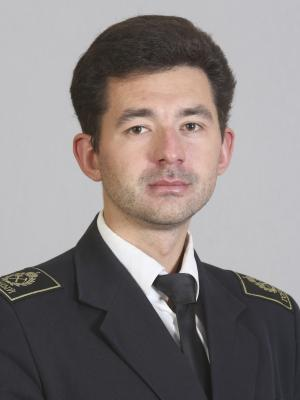
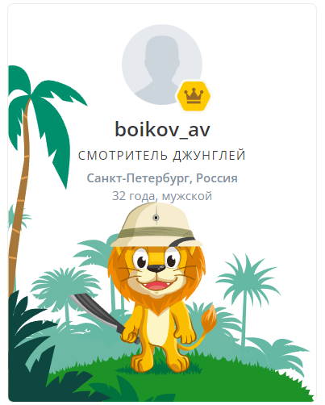

Boikov Aleksei

Associate professor, Ph.D.
Lead Scientist of Research and Educational Center for Digital Technologies, Saint-Petersburg Mining Universuty
Contact information:
- Phone: +7 (962) 709 76 37
- E-Mail: bo4onok_s_romom@gmail.com
- Telegram: @bo4onoksromom
- Scopus Author ID: 57065230400
- Discord: Boikov Aleksei (@bo4onoksromom)
- Web site: personal page
About Myself:
In 2011 I graduated from St.-Petersburg Mining University with a degree in Automation and Control with a
bachelor’s degree.
From 2011 to 2013 I worked as an engineer at Vitek-Avtomatika LLC. As a result of my professional
activities, I received an international certificate as an assistant developer in the LabVIEW software
product and practical experience in working with automated information-measuring systems.
In 2013, I received a master’s degree from the National Mineral and Raw Materials University “Gorny”
at the Department of Automation of Technological Processes and Production.
From 2014 to the present time, I have been working as an assistant at the Department of Automation
of Technological Processes and Production.
In 2015 I defended Ph.D. thesis at the National Mineral and Raw Materials University “Gorny”.
From 2018 to the present I have been working as an associate professor at the Department of
Automation of Technological Processes and Production.
From 2020 to the present I have been working as a Lead Scientist of Research and Educational
Center for Digital Technologies.
Code example:
I’m just a beginner.
alert('Hello world');
Cources:
Contact information:
- Certificate of advanced training No. 772403518702 (registration number 6670) issued on December 15, 2015 to A.V. Boikov under the additional professional program “National Qualifications System (NQS) as a basis for guaranteeing the quality of education” in the amount of 72 hours
- Certificate of advanced training No. 782404848428 (registration number 2068) issued on January 26, 2018 to A.V. Boikov under the additional professional program “Application of information and communication technologies in the educational process” in the amount of 16 hours
- Certificate of advanced training No. 782406899559 (registration number 2777) issued on April 25, 2018 to A.V. Boikov under the additional professional program “Pedagogical activity in vocational education and additional professional education” in the amount of 72 hours
- Certificate of professional development PC 773301098909 (registration number 06.03d3/4942) was issued in 2020 to A.V. Boikov under the program “Improving digital literacy and the efficiency of using digital technologies in the educational process in the implementation of educational programs of higher education” in the amount of 72 hours
- Certificate of advanced training No. 782410608819 (registration number 5433) issued on April 29, 2021 to A.V. Boikov under the additional professional program “Labor protection. First aid” in the amount of 40 hours
- Certificate of advanced training PC 160300004530 (registration number 21U150-02830) issued on May 24, 2021 to A.V. Boikov under the program “Practice-oriented approaches in teaching specialized IT disciplines” in the amount of 144 hours
- Certificate of advanced training No. 782410609040 (registration number 5654) issued on May 28, 2021 to A.V. Boikov under the program “Mathematical Foundations and Practical Examples of Using Machine Learning” in the amount of 48 hours
- Certificate of advanced training PC 782415391533 (registration number 14669) issued on November 11, 2021 to A.V. Boikov under the program “Master for creating tests in the LMS Moodle” in the amount of 36 hours
- Diploma of professional retraining 782403774955 (registration number 430) was issued on December 29, 2021 to A.V. Boikov under the program “Modern technologies in pedagogy of higher education in the era of digitalization. Teacher of higher education” in the amount of 260 hours.
Language:
- Russian - Native
-
English - B1 (Intermediate)
 - Spanish - only in dreams